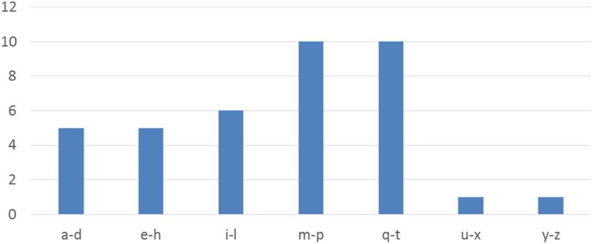
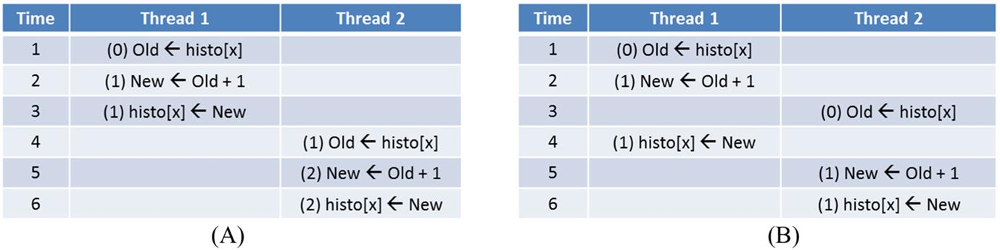
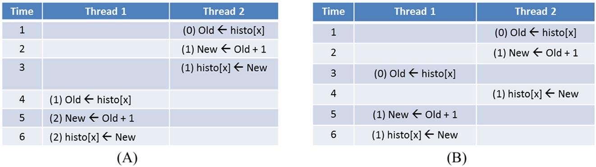
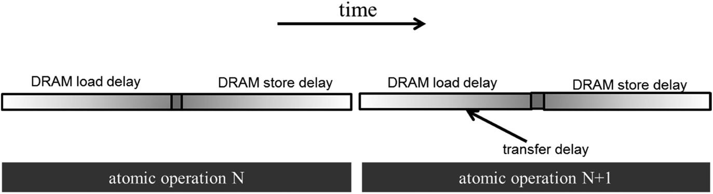
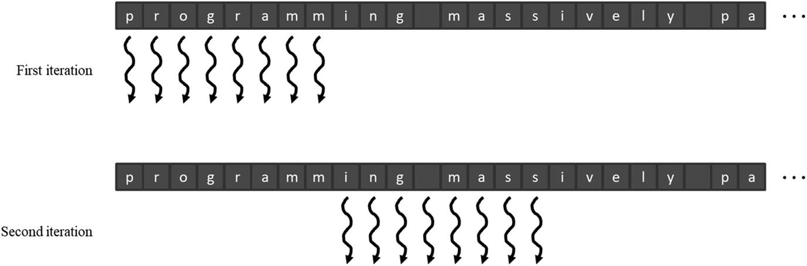
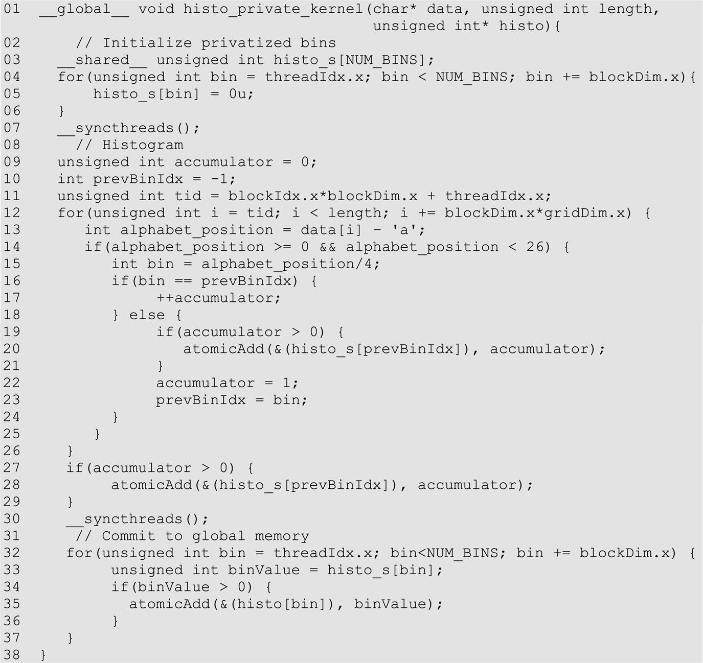

This chapter introduces the parallel histogram computation pattern and the concept of atomic operations. It shows that atomic operations to the same location are serialized and that their throughput is determined by their latency. It further introduces four important optimization techniques: thread coarsening–based interleaved data partitioning for improved memory coalescing, caching for reduced latency and improved throughput of atomic operations, privatization for reduced contention, and aggregation for reduced contention.
Histogram; feature extraction; output interference; race condition; atomic operation; read-modify-write; memory bound; memory latency; memory throughput; memory coalescing; contiguous partitioning; interleaved partitioning
The parallel computation patterns that we have presented so far all allow the task of computing each output element to be exclusively assigned to, or owned by, a thread. Therefore these patterns are amenable to the owner-computes rule, in which every thread can write into its designated output element(s) without any concern about interference from other threads. This chapter introduces the parallel histogram computation pattern, in which each output element can potentially be updated by any thread. Therefore one must take care to coordinate among threads as they update output elements and avoid any interference that could corrupt the final result. In practice, there are many other important parallel computation patterns in which output interference cannot be easily avoided. Therefore parallel histogram algorithms provide an example of output interference that occurs in these patterns. We will first examine a baseline approach that uses atomic operations to serialize the updates to each element. This baseline approach is simple but inefficient, often resulting in disappointing execution speed. We will then present some widely used optimization techniques, most notably privatization, to significantly enhance execution speed while preserving correctness. The cost and benefit of these techniques depend on the underlying hardware as well as the characteristics of the input data. It is therefore important for a developer to understand the key ideas of these techniques and to be able to reason about their applicability in different circumstances.
A histogram is a display of the number count or percentage of occurrences of data values in a dataset. In the most common form of histogram, the value intervals are plotted along the horizontal axis, and the count of data values in each interval is represented as the height of a rectangle, or bar, rising from the horizontal axis. For example, a histogram can be used to show the frequency of letters of the alphabet in the phrase “programming massively parallel processors.” For simplicity we assume that the input phrase is in all lowercase. By inspection we see that there are four instances of the letter “a,” zero of the letter “b,” one of the letter “c,” and so on. We define each value interval as a continuous range of four letters of the alphabet. Thus the first value interval is “a” through “d,” the second value interval is “e” through “h,” and so on. Fig. 9.1 shows a histogram that displays the frequency of letters in the phrase “programming massively parallel processors” according to our definition of value intervals.

Histograms provide useful summaries of datasets. In our example we can see that the phrase being represented consists of letters that are heavily concentrated in the middle intervals of the alphabet and is noticeably sparse in the later intervals. The shape of the histogram is sometimes referred to as a feature of the dataset and provides a quick way to determine whether there are significant phenomena in the dataset. For example, the shape of a histogram of the purchase categories and locations of a credit card account can be used to detect fraudulent usage. When the shape of the histogram deviates significantly from the norm, the system raises a flag of potential concern.
Many application domains rely on histograms to summarize datasets for data analysis. One such area is computer vision. Histograms of different types of object images, such as faces versus cars, tend to exhibit different shapes. For example, one can plot the histogram of pixel luminous values in an image or an area of an image. Such a histogram of the sky on a sunny day might have only a small number of very tall bars in the high-value intervals of the luminous spectrum. By dividing an image into subareas and analyzing the histograms for these subareas, one can quickly identify the interesting subareas of an image that potentially contain the objects of interest. The process of computing histograms of image subareas is an important approach to feature extraction in computer vision, in which the features refer to patterns of interest in images. In practice, whenever there is a large volume of data that needs to be analyzed to distill interesting events, histograms are likely used as a foundational computation. Credit card fraudulence detection and computer vision obviously meet this description. Other application domains with such needs include speech recognition, website purchase recommendations, and scientific data analysis, such as correlating heavenly object movements in astrophysics.
Histograms can be easily computed in a sequential manner. Fig. 9.2 shows a sequential function that calculates the histogram defined in Fig. 9.1. For simplicity the histogram function is required to recognize only lowercase letters. The C code assumes that the input dataset comes in a char array data and the histogram will be generated into the int array histo (line 01). The number of input data items is specified in function parameter length. The for-loop (lines 02–07) sequentially traverses the array, identifies the alphabet index of the character in the visited position data[i], saves the alphabet index into the alphabet_position variable, and increments the histo[alphabet_position/4] element associated with that interval. The calculation of the alphabet index relies on the fact that the input string is based on the standard ASCII code representation in which the alphabet letters “a” through “z” are encoded into consecutive values according to their order in the alphabet.
Although one might not know the exact encoded value of each letter, one can assume that the encoded value of a letter is the encoded value of “a” plus the alphabet position difference between that letter and “a.” In the input, each character is stored in its encoded value. Thus the expression data[i] – “a” (line 03) derives the alphabet position of the letter with the alphabet position of “a” being 0. If the position value is greater than or equal to 0 and less than 26, the data character is indeed a lowercase alphabet letter (line 04). Keep in mind that we defined the intervals such that each interval contains four alphabet letters. Therefore the interval index for the letter is its alphabet position value divided by 4. We use the interval index to increment the appropriate histo array element (line 05).
The C code in Fig. 9.2 is quite simple and efficient. The computational complexity of the algorithm is O(N), where N is the number of input data elements. The data array elements are accessed sequentially in the for-loop, so the CPU cache lines are well used whenever they are fetched from the system DRAM. The histo array is so small that it fits well in the level-one (L1) data cache of the CPU, which ensures fast updates to the histo elements. For most modern CPUs, one can expect the execution speed of this code to be memory bound, that is, limited by the rate at which the data elements can be brought from DRAM into the CPU cache.
The most straightforward approach to parallelizing histogram computation is to launch as many threads as there are data elements and have each thread process one input element. Each thread reads its assigned input element and increments the appropriate interval counter for the character. Fig. 9.3 illustrates an example of this parallelization strategy. Note that multiple threads need to update the same counter (m-p), which is a conflict that is referred to as output interference. Programmers must understand the concepts of race conditions and atomic operations in order to confidently handle such output interferences in their parallel code.
An increment to an interval counter in the histo array is an update, or read-modify-write, operation on a memory location. The operation involves reading the memory location (read), adding one to the original value (modify), and writing the new value back to the memory location (write). Read-modify-write is a frequently used operation for coordinating collaborative activities.
For example, when we make a flight reservation with an airline, we bring up the seat map and look for available seats (read), we pick a seat to reserve (modify), and that changes the seat status to unavailable in the seat map (write). A bad potential scenario can happen as follows:
After the sequence, both customers think that they have seat 9C. We can imagine that they will have an unpleasant situation when they board the flight and find out that one of them cannot take the reserved seat! Believe it or not, such unpleasant situations happen in real life because of flaws in airline reservation software.
For another example, some stores allow customers to wait for service without standing in line. They ask each customer to take a number from one of the kiosks. There is a display that shows the number that will be served next. When a service agent becomes available, the agent asks the customer to present the ticket that matches the number, verifies the ticket, and updates the display number to the next higher number. Ideally, all customers will be served in the order in which they enter the store. An undesirable outcome would be that two customers simultaneously sign in at two kiosks and both receive tickets with the same number. When a service agent calls for that number, both customers expect to be the one who should receive service.
In both examples, undesirable outcomes are caused by a phenomenon called read-modify-write race condition, in which the outcome of two or more simultaneous update operations varies depending on the relative timing of the operations that are involved.1 Some outcomes are correct, and some are incorrect. Fig. 9.4 illustrates a race condition when two threads attempt to update the same histo element in our text histogram example. Each row in Fig. 9.4 shows the activity during a time period, with time progressing from top to bottom.

Fig. 9.4A depicts a scenario in which thread 1 completes all three parts of its read-modify-write sequence during time periods 1 through 3 before thread 2 starts its sequence at time period 4. The value in the parenthesis in front of each operation shows the value being written into the destination, assuming that the value of histo[x] was initially 0. In this scenario the value of histo[x] afterwards is 2, exactly what one would expect. That is, both threads successfully incremented histo[x]. The element value starts with 0 and becomes 2 after the operations complete.
In Fig. 9.4B the read-modify-write sequences of the two threads overlap. Note that thread 1 writes the new value into histo[x] at time period 4. When thread 2 reads histo[x] at time period 3, it still has the value 0. As a result, the new value that it calculates and eventually writes to histo[x] is 1 rather than 2. The problem is that thread 2 read histo[x] too early, before thread 1 had completed its update. The net outcome is that the value of histo[x] afterwards is 1, which is incorrect. The update by thread 1 is lost.
During parallel execution, threads can run in any order relative to each other. In our example, thread 2 can easily start its update sequence ahead of thread 1. Fig. 9.5 shows two such scenarios. In Fig. 9.5A, thread 2 completes its update before thread 1 starts its. In Fig. 9.5B, thread 1 starts its update before thread 2 has completed its. It should be obvious that the sequences in Fig. 9.5A result in a correct outcome for histo[x], but those in Fig. 9.5B produce an incorrect outcome.

The fact that the final value of histo[x] varies depending on the relative timing of the operations that are involved indicates that there is a race condition. We can eliminate such variation by eliminating the possible interleaving of operation sequences of thread 1 and thread 2. That is, we would like to allow the timings shown in Figs. 9.4A and 9.5A while eliminating the possibilities shown in Figs. 9.4B and 9.5B. This can be accomplished by using atomic operations.
An atomic operation on a memory location is an operation that performs a read-modify-write sequence on the memory location in such a way that no other read-modify-write sequence to the location can overlap with it. That is, the read, modify, and write parts of the operation form an undividable unit, hence the name atomic operation. In practice, atomic operations are realized with hardware support to lock out other operations to the same location until the current operation is complete. In our example, such support eliminates the possibility depicted in Figs. 9.4B and 9.5B, since the trailing thread cannot start its update sequence until the leading thread has completed its.
It is important to remember that atomic operations do not enforce any particular execution order between threads. In our example, both orders shown in Figs. 9.4A and 9.5A are allowed by atomic operations. Thread 1 can run either ahead of or behind thread 2. The rule that is being enforced is that if both threads perform atomic operations on the same memory location, the atomic operation that is performed by the trailing thread cannot be started until the atomic operation of the leading thread completes. This effectively serializes the atomic operations that are being performed on a memory location.
Atomic operations are usually named according to the modification that is performed on the memory location. In our text histogram example we are adding a value to the memory location, so the atomic operation is called atomic add. Other types of atomic operations include subtraction, increment, decrement, minimum, maximum, logical and, and logical or. A CUDA kernel can perform an atomic add operation on a memory location through a function call:
The atomicAdd function is an intrinsic function (see the sidebar “Intrinsic Functions”) that is compiled into a hardware atomic operation instruction. This instruction reads the 32-bit word pointed to by the address argument in global or shared memory, adds val to the old content, and stores the result back to memory at the same address. The function returns the old value at the address.
Fig. 9.6 shows a CUDA kernel that performs parallel histogram computation. The code is similar to the sequential code in Fig. 9.2 with two key distinctions. The first distinction is that the loop over input elements is replaced with a thread index calculation (line 02) and a boundary check (line 03) to assign a thread to each input element. The second distinction is that the increment expression in Fig. 9.2:
becomes an atomicAdd() function call in Fig. 9.6 (line 06). The address of the location to be updated, &(histo[alphabet_position/4]), is the first argument. The value to be added to the location, 1, is the second argument. This ensures that any simultaneous updates to any histo array element by different threads are properly serialized.
The atomic operation that is used in the kernel of Fig. 9.6 ensures the correctness of updates by serializing any simultaneous updates to a location. As we know, serializing any portion of a massively parallel program can drastically increase the execution time and reduce the execution speed of the program. Therefore it is important that such serialized operations account for as little execution time as possible.
As we learned in Chapter 5, Memory Architecture and Data Locality, the access latency to data in DRAMs can take hundreds of clock cycles. In Chapter 4, Compute Architecture and Scheduling, we learned that GPUs use zero-cycle context switching to tolerate such latency. In Chapter 6, Performance Considerations, we learned that as long as we have many threads whose memory access latencies can overlap with each other, the execution speed is limited by the throughput of the memory system. Therefore it is important that GPUs make full use DRAM bursts, banks, and channels to achieve high memory access throughput.
It should be clear to the reader at this point that the key to high memory access throughput is to have many DRAM accesses that are simultaneously in progress. Unfortunately, this strategy breaks down when many atomic operations update the same memory location. In this case, the read-modify-write sequence of a trailing thread cannot start until the read-modify-write sequence of a leading thread is complete. As is shown in Fig. 9.7, the execution of atomic operations at the same memory location is such that there can be only one in progress. The duration of each atomic operation is approximately the latency of a memory load (left section of the atomic operation time) plus the latency of a memory store (right section of the atomic operation time). The length of these time sections of each read-modify-write operation, usually hundreds of clock cycles, defines the minimum amount of time that must be dedicated to servicing each atomic operation and limits the throughput, or the rate at which atomic operations can be performed.

For example, assume a memory system with a 64-bit (8-byte) double data rate DRAM interface per channel, eight channels, 1 GHz clock frequency, and typical access latency of 200 cycles. The peak access throughput of the memory system is 8 (bytes/transfer) * 2 (transfers per clock per channel) * 1 G (clocks per second) * 8 (channels) = 128 GB/s. Assuming that each data accessed is 4 bytes, the system has a peak access throughput of 32 G data elements per second.
However, in performing atomic operations on a particular memory location, the highest throughput that one can achieve is one atomic operation every 400 cycles (200 cycles for the read and 200 cycles for the write). This translates into a time-based throughput of 1/400 atomics/clock * 1 G (clocks/second) = 2.5 M atomics/second. This is dramatically lower than most users expect from a GPU memory system. Furthermore, the long latency of the sequence of atomic operations will likely dominate the kernel execution time and can dramatically lower the execution speed of the kernel.
In practice, not all atomic operations will be performed on a single memory location. In our text histogram example, the histogram has seven intervals. If the input characters were uniformly distributed in the alphabet, the atomic operations would be evenly distributed among the histo elements. This would boost the throughput to 7*2.5 M = 17.5 M atomic operations per second. In reality, the boost factor tends to be much lower than the number of intervals in the histogram because the characters tend to have a biased distribution in the alphabet. For example, in Fig. 9.1 we see that the characters in the example phrase are heavily biased toward the m-p and q-t intervals. The heavy contention traffic to update these intervals will likely reduce the achievable throughput to only around (28/10)*2.5 M = 7 M.
One approach to improving the throughput of atomic operations is to reduce the access latency to the heavily contended locations. Cache memories are the primary tool for reducing memory access latency. For this reason, modern GPUs allow atomic operations to be performed in the last-level cache, which is shared among all streaming multiprocessors (SMs). During an atomic operation, if the updated variable is found in the last-level cache, it is updated in the cache. If it cannot be found in the last-level cache, it triggers a cache miss and is brought into the cache, where it is updated. Since the variables that are updated by atomic operations tend to be heavily accessed by many threads, these variables tend to remain in the cache once they have been brought in from DRAM. Because the access time to the last-level cache is in tens of cycles rather than hundreds of cycles, the throughput of atomic operations is improved by at least an order of magnitude compared to early generations of GPU. This is an important reason why most modern GPUs support atomic operations in the last-level cache.
Another approach to improving the throughput of atomic operations is to alleviate the contention by directing the traffic away from the heavily contended locations. This can be achieved with a technique referred to as privatization that is commonly used to address the heavy output interference problems in parallel computing. The idea is to replicate highly contended output data structures into private copies so that each subset of threads can update its private copy. The benefit is that the private copies can be accessed with much less contention and often at much lower latency. These private copies can dramatically increase the throughput for updating the data structures. The downside is that the private copies need to be merged into the original data structure after the computation completes. One must carefully balance between the level of contention and the merging cost. Therefore in massively parallel systems, privatization is typically done for subsets of threads rather than individual threads.
In our text histogram example we can create multiple private histograms and designate a subset of threads to update each of them. For example, we can create two private copies and have even-index blocks to update one of them and odd-index blocks to update the other. For another example, we can create four private copies and have blocks whose indices are of the form 4n+i to update the ith private version for I=0, …, 3. A common approach is to create a private copy for each thread block. This approach has multiple advantages that we will see later.
Fig. 9.8 shows an example of how privatization is applied to the text histogram example from Fig. 9.3. In this example the threads are organized into thread blocks, each of which consists of eight threads (in practice, thread blocks are much larger). Each thread block receives a private copy of the histogram that it updates. As shown in Fig. 9.8, rather than having contention across all the threads that update the same histogram bin, contention will be experienced only between threads in the same block and when the private copies are being merged at the end.
Fig. 9.9 presents a simple kernel that creates and associates a private copy of the histogram to every block. In this scheme, up to 1024 threads would work on a copy of the histogram. In this kernel the private histograms are in the global memory. These private copies will likely be cached in the L2 cache for reduced latency and improved throughput.
The first part of the kernel in Fig. 9.9 (lines 02–08) is similar to the kernel in Fig. 9.6 with one key distinction. The kernel in Fig. 9.9 assumes that the host code will allocate enough device memory for the histo array to hold all the private copies of the histogram, which amounts to gridDim.x*NUM_BINS*4 bytes. This is reflected in line 06, where each thread adds an offset of blockIdx.x*NUM_BINS to the index when performing atomic add on histo elements (bins of the histogram). This offset shifts the position to the private copy for the block to which the thread belongs. In this case, the level of contention is reduced by a factor that is approximately the number of active blocks across all SMs. The effect of reduced contention can result in orders of magnitude of improvement in the update throughput for the kernel.
At the end of the execution, each thread block will commit the values in private copy into the version produced by block 0 (lines 09–17). That is, we promote the private copy of block 0 into a public copy that will hold the total results from all block. The threads in the block first wait for each other to finish updating the private copy (line 10). Next, the threads iterate over the private histogram bins (line 11), each thread being responsible for committing one or more of the private bins. A loop is used to accommodate an arbitrary number of bins. Each thread reads the value of the private bin for which it is responsible (line 13) and checks whether the bin is nonzero (line 13). If it is, the thread commits the value by atomically adding it to the copy of block 0 (line 14). Note that the addition needs to be performed atomically because threads from multiple blocks can be simultaneously performing the addition on the same location. Therefore at the end of the kernel execution, the final histogram will be in the first NUM_BINS elements of the histo array. Since only one thread from each block will be updating any given histo array element during this phase of the kernel execution, the level of contention for each location is very modest.
One benefit of creating a private copy of the histogram on a per-thread-block basis is that the threads can use __syncthreads() to wait for each other before committing. If the private copy were accessed by multiple blocks, we would have needed to call another kernel to merge the private copies or used other sophisticated techniques. Another benefit of creating a private copy of the histogram on a per-thread-block basis is that if the number of bins in the histogram is small enough, the private copy of the histogram can be declared in shared memory. Using shared memory would not be possible if the private copy were accessed by multiple blocks because blocks do not have visibility of each other’s shared memory.
Recall that any reduction in latency directly translates into improved throughput of atomic operations on the same memory location. The latency for accessing memory can be dramatically reduced by placing data in the shared memory. Shared memory is private to each SM and has very short access latency (a few cycles). This reduced latency directly translates into increased throughput of atomic operations.
Fig. 9.10 shows a privatized histogram kernel that stores the private copies in the shared memory instead of global memory. The key difference from the kernel code in Fig. 9.9 is that the private copy of the histogram is allocated in shared memory in the histo_s array and is initialized to 0 in parallel by the threads of the block (line 02–06). The barrier synchronization (line 07) ensures that all bins of the private histogram have been properly initialized before any thread starts to update them. The remaining code is identical to that in Fig. 9.9 except that the first atomic operation is performed on the elements of the shared memory array histo_s (line 13) and the private bin value is later read from there (line 19).
We have seen that privatization is effective in reducing the contention of atomic operations and that storing the privatized histogram in the shared memory reduces the latency of each atomic operation. However, the overhead of privatization is the need to commit the private copies to the public copy. This commit operation is done once per thread block. Hence the more thread blocks we use, the larger this overhead is. The overhead is usually worth paying when the thread blocks are executed in parallel. However, if the number of thread blocks that are launched exceeds the number that can be executed simultaneously by the hardware, the hardware schedule will serialize these thread blocks. In this case, the privatization overhead is incurred unnecessarily.
We can reduce the overhead of privatization via thread coarsening. In other words, we can reduce the number of private copies that are committed to the public copy by reducing the number of blocks and having each thread process multiple input elements. In this section we look at two strategies for assigning multiple input elements to a thread: contiguous partitioning and interleaved partitioning.
Fig. 9.11 shows an example of the contiguous partitioning strategy. The input is partitioned into contiguous segments, and each segment is assigned to a thread. Fig. 9.12 shows the histogram kernel with coarsening applied using the contiguous partitioning strategy. The difference from Fig. 9.10 is on lines 09–10. In Fig. 9.10 the input element index i corresponded to the global thread index, so each thread received one input element. In Fig. 9.11 the input elements index i is the index of a loop that iterates from tid*CFACTOR to (tid + 1)*CFACTOR where CFACTOR is the coarsening factor. Therefore each thread takes a contiguous segment of CFACTOR elements. The min operation in the loop bound ensures that the threads at the end do not read out of bounds.
Partitioning data into contiguous segments is conceptually simple and intuitive. On a CPU, where parallel execution typically involves a small number of threads, contiguous partitioning is often the best-performing strategy, since the sequential access pattern by each thread makes good use of cache lines. Since each CPU cache typically supports only a small number of threads, there is little interference in cache usage by different threads. The data in cache lines, once brought in for a thread, can be expected to remain for the subsequent accesses.
In contrast, contiguous partitioning on GPUs results in a suboptimal memory access pattern. As we learned in Chapter 5, Memory Architecture and Data Locality, the large number of simultaneously active threads in an SM typically causes so much interference in the cache that one cannot expect data to remain in the cache for all the sequential accesses by a single thread. Instead, we need to make sure that threads in a warp access consecutive locations to enable memory coalescing. This observation motivates interleaved partitioning.
Fig. 9.13 shows an example of the interleaved partitioning strategy. During the first iteration, the eight threads access characters 0 through 7 (“programm”). With memory coalescing, all the elements will be fetched with only one DRAM access. During the second iteration the four threads access the characters “ing mass” in one coalesced memory access. It should be clear why this is called interleaved partitioning: The partitions to be processed by different threads are interleaved with each other. Obviously, this is a toy example, and in reality, there will be many more threads. There are also more subtle performance considerations. For example, each thread should process four characters (a 32-bit word) in each iteration to fully utilize the interconnect bandwidth between the caches and the SMs.

Fig. 9.14 shows the histogram kernel with coarsening applied by using the interleaved partitioning strategy. The difference from Figs. 9.10 and 9.12 is again on lines 09–10. In the first iteration of the loop, each thread accesses the data array using its global thread index: Thread 0 accesses element 0, thread 1 accesses element 1, thread 2 accesses element 2, and so on. Thus all threads jointly process the first blockDim.x*gridDim.x elements of the input. In the second iteration, all threads add blockDim.x*gridDim.x to their indices and jointly process the next section of blockDim.x*gridDim.x elements.
When the index of a thread exceeds the valid range of the input buffer (its private i variable value is greater than or equal to length), the thread has completed processing its partition and will exit the loop. Since the size of the buffer might not be a multiple of the total number of threads, some of the threads might not participate in the processing of the last section. Therefore some threads will execute one fewer loop iteration than others.
Some datasets have a large concentration of identical data values in localized areas. For example, in pictures of the sky, there can be large patches of pixels of identical value. Such a high concentration of identical values causes heavy contention and reduced throughput of parallel histogram computation.
For such datasets a simple and yet effective optimization is for each thread to aggregate consecutive updates into a single update if they are updating the same element of the histogram (Merrill, 2015). Such aggregation reduces the number of atomic operations to the highly contended histogram elements, thus improving the effective throughput of the computation.
Fig. 9.15 shows an aggregated text histogram kernel. The key changes compared to the kernel in Fig. 9.14 are as follows: Each thread declares an additional accumulator variable (line 09) that keeps track of the number of updates aggregated thus far and a prevBinIdx variable (line 10) that tracks the index of the histogram bin that was last encountered and is being aggregated. Each thread initializes the accumulator variable to zero, indicating that no updates has been initially aggregated, and the prevBinIdx to −1 so that no alphabet input will match it.

When an alphabet data is found, the thread compares the index of the histogram element to be updated with that being aggregated (line 16). If the index is the same, the thread simply increments the accumulator (line 17), extending the streak of aggregated updates by one. If the index is different, the streak of aggregated updates to the histogram element has ended. The thread uses atomic operation to add the accumulator value to the histogram element whose index is tracked by prevBinIdx (lines 19–21). This effectively flushes out the total contribution of the previous streak of aggregated updates.
With this scheme, the update is always at least one element behind. In the extreme case in which there is no streak, all the updates will simply always be one element behind. This is the reason why after a thread has completed scanning all input elements and exited the loop, the threads need to check whether there is a need to flush out the accumulator value (line 27). If so, the accumulator value is flushed to the right histo_s element (line 28).
One important observation is that the aggregated kernel requires more statements and variables. Thus if the contention rate is low, an aggregated kernel may execute at lower speed than the simple kernel. However, if the data distribution leads to heavy contention in atomic operation execution, aggregation may result in significantly higher speed. The added if-statement can potentially exhibit control divergence. However, if there is either no contention or heavy contention, there will be little control divergence, since the threads would either all be flushing the accumulator value or all be in a streak. In the case in which some threads will be in a streak and some will be flushing out their accumulator values, the control divergence is likely to be compensated by the reduced contention.
Computing histograms is important for analyzing large datasets. It also represents an important class of parallel computation patterns in which the output location of each thread is data-dependent, which makes it infeasible to apply the owner-computes rule. It is therefore a natural vehicle for introducing the concept of read-modify-write race conditions and the practical use of atomic operations that ensure the integrity of concurrent read-modify-write operations to the same memory location.
Unfortunately, as we explained in this chapter, atomic operations have much lower throughput than simpler memory read or write operations because their throughput is approximately the inverse of two times the memory latency. Thus in the presence of heavy contention, histogram computation can have surprisingly low computation throughput. Privatization is introduced as an important optimization technique that systematically reduces contention and can further enable the use of shared memory, which supports low latency and thus high throughput. In fact, supporting fast atomic operations among threads in a block is an important use case of the shared memory. Coarsening was also applied to reduce the number of private copies that need to be merged, and different coarsening strategies that use contiguous partitioning and interleaved partitioning were compared. Finally, for datasets that cause heavy contention, aggregation can also lead to significantly higher execution speed.